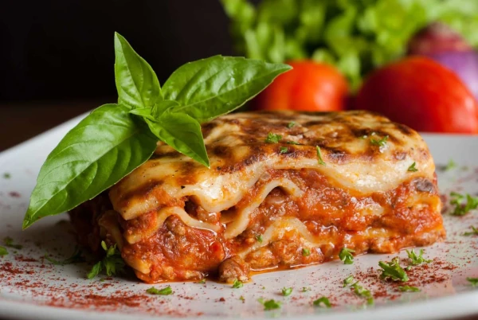

Recetas de Odin
La cocina de recetas naturales no es simplemente una tendencia pasajera; es una filosofía de alimentación que celebra la pureza y la vitalidad de los ingredientes en su estado más genuino. Se trata de un viaje sensorial que nos invita a reconectar con la tierra, priorizando los alimentos integrales, frescos y mínimamente procesados, libres de aditivos químicos, conservantes artificiales y azúcares refinados.
